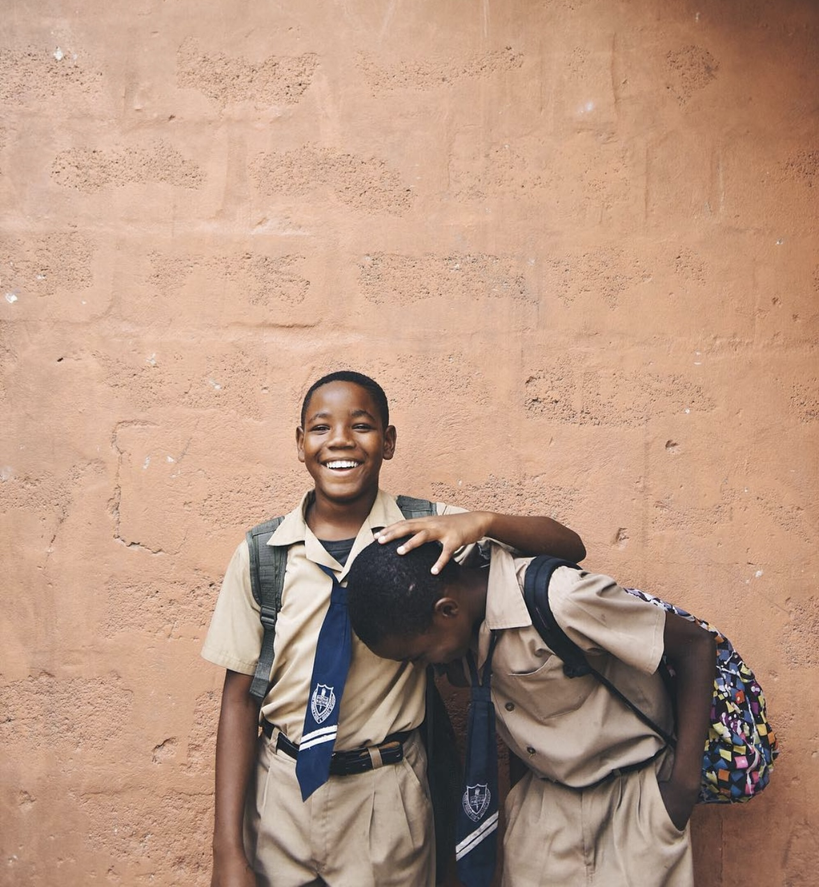

Capturing moments!
I love telling stories! And to be honest, i can only tell a perfect story with photography. i took this picture exactly 4 years ago, saw these two young lads walking cheerfully from school on this faithful day, looked like they had aced their exams! seeing them quckly took me back in time to when i was at their age, we enjoyed these moments back then. i couldn't help but offer to get shots of them which in return added an extra reason to smile for the both of them.
